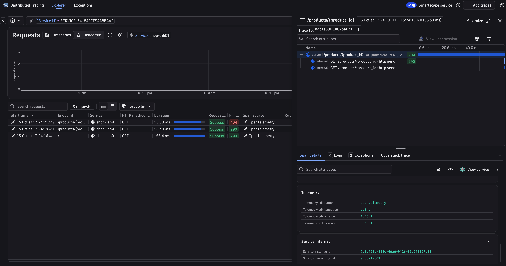

Lab 01: Auto instrumentation¶
Time: 15 minutes
Goal¶
Get traces from a Python web app with zero code changes. You will run an app that has no OpenTelemetry code, and still see spans.
Why it matters¶
Auto instrumentation is the fastest way to start. In a few minutes you get HTTP spans, timings, and status codes. It is a good first step for any service. You will also see what it cannot know: your business.
Steps¶
The lab files are in labs/01-auto-instrumentation/. The app (app.py) is a small FastAPI shop with two routes. It does not import OpenTelemetry. Open it and check.
- Go to the lab folder:
-
Turn on the virtual environment you made in Setup. It is in the repo root, so from this folder:
-
Check that the packages are installed. Read
requirements.txtin the repo root. Among others, it has FastAPI, uvicorn, and two OpenTelemetry packages this lab uses:opentelemetry-distrogives you theopentelemetry-instrumentandopentelemetry-bootstrapcommands.opentelemetry-exporter-otlpcan send data with OTLP.
-
Install the instrumentation libraries.
To see what it would install without installing, run:opentelemetry-bootstraplooks at the packages in your environment and installs a matching instrumentation library for each one it knows (for example, FastAPI): -
Tell OpenTelemetry what to do. You do this with environment variables, not code. Pick one:
Copy
.env.exampleto.envin the repo root and fill it in. See Setup. Then load it and set the variables:set -a; source ../../.env; set +a export OTEL_SERVICE_NAME="shop-lab01" export OTEL_TRACES_EXPORTER=console,otlp export OTEL_METRICS_EXPORTER=none export OTEL_LOGS_EXPORTER=none export OTEL_SEMCONV_STABILITY_OPT_IN=http export OTEL_EXPORTER_OTLP_PROTOCOL=http/protobuf export OTEL_EXPORTER_OTLP_ENDPOINT="$DT_ENDPOINT/api/v2/otlp" export OTEL_EXPORTER_OTLP_HEADERS="Authorization=Api-Token $DT_API_TOKEN"Get-Content ..\..\.env | ForEach-Object { if ($_ -match '^\s*([^#=\s][^=]*)=(.*)$') { Set-Item "env:$($Matches[1].Trim())" $Matches[2].Trim().Trim('"') } } $env:OTEL_SERVICE_NAME = "shop-lab01" $env:OTEL_TRACES_EXPORTER = "console,otlp" $env:OTEL_METRICS_EXPORTER = "none" $env:OTEL_LOGS_EXPORTER = "none" $env:OTEL_SEMCONV_STABILITY_OPT_IN = "http" $env:OTEL_EXPORTER_OTLP_PROTOCOL = "http/protobuf" $env:OTEL_EXPORTER_OTLP_ENDPOINT = "$env:DT_ENDPOINT/api/v2/otlp" $env:OTEL_EXPORTER_OTLP_HEADERS = "Authorization=Api-Token $env:DT_API_TOKEN"Print spans in the terminal:
Variable Meaning OTEL_SERVICE_NAMEThe name of your service in the backend OTEL_TRACES_EXPORTERconsoleprints spans.otlpsends them with OTLP.OTEL_METRICS_EXPORTER,OTEL_LOGS_EXPORTERnone: this lab only uses tracesOTEL_SEMCONV_STABILITY_OPT_INhttpgives the stable attribute namesOTEL_EXPORTER_OTLP_PROTOCOLhttp/protobufis what Dynatrace acceptsOTEL_EXPORTER_OTLP_ENDPOINTWhere to send data: <your tenant>/api/v2/otlpOTEL_EXPORTER_OTLP_HEADERSThe token, so Dynatrace accepts the data -
Start the app with the agent in front of it. Without
opentelemetry-instrument, this is a normal app with no telemetry:opentelemetry-instrumentstarts your command. Before your app code runs, it turns on every instrumentation library it finds, and it sets up the SDK from the environment variables. -
In a second terminal, send some requests:
-
Look at the spans. In console mode, they print in the first terminal. In Dynatrace, open Distributed Tracing and filter by service
shop-lab01.
New terminal?
Environment variables and the virtual environment belong to one terminal. If you open a new one, activate the environment and set the variables from step 5 again:
Token scopes¶
For this lab, the Dynatrace API token needs the scope openTelemetryTrace.ingest. The later labs also send metrics and logs, so we ask for all three:
openTelemetryTrace.ingestmetrics.ingestlogs.ingest
Source: Dynatrace OTLP export docs.
Expected result¶
For each request you see one server span named like GET /products/{product_id}. FastAPI also adds small child spans for the ASGI send events.
Here are the important attributes on the server span:
| Attribute | Example | Meaning |
|---|---|---|
http.request.method |
GET |
The HTTP method |
url.path |
/products/1 |
The path that was called |
http.route |
/products/{product_id} |
The route pattern (low cardinality) |
http.response.status_code |
200 |
The result |
client.address |
127.0.0.1 |
Who called |
user_agent.original |
curl/8.7.1 |
The client program |

In Dynatrace, the list shows one row per request. Open one to see the server span and its two small http send child spans. Note the 404 row: Dynatrace shows it as Success, because a 4xx is not a server failure.
What you got for free¶
- A span for every HTTP request, with timing.
- Standard attributes: method, path, route, status, client.
- Context propagation: if another service calls this one with a
traceparentheader, the spans join its trace. (Lab 02.)
What you did not get¶
- Anything about your business. Which product? How much did it cost? Which customer?
- The
404request has statusUNSET, notERROR. For a server, a 4xx is the client's mistake, so OTel does not mark it as an error. - Any detail inside the function. The 50 ms of "work" is just part of the one span.
Lab 03 shows how manual instrumentation adds this.
Stuck?¶
python: command not foundorNo module named venv: install Python 3.11 or newer. See Setup.opentelemetry-instrument: command not found: the virtual environment is not on (see Setup). Turn it on:source ../../.venv/bin/activate(macOS / Linux) or..\..\.venv\Scripts\Activate.ps1(Windows PowerShell).- Port 8000 is busy (for example,
mkdocs servealso uses it): stop the other program, or use another port, such as--port 8001. Then use the same port in thecurlcommands. - Nothing in Dynatrace, no errors: wait 30 seconds. Check that
DT_ENDPOINThas no/api/...at the end. Step 5 adds/api/v2/otlp. - 401 or 403 from Dynatrace: the token is wrong or lacks the
openTelemetryTrace.ingestscope. - Console output is not showing: the console exporter writes in batches. Wait about 5 seconds after a request. Also check that you sent a request (nothing prints at startup) and that
OTEL_TRACES_EXPORTERis set in the same terminal that runs the app (echo $OTEL_TRACES_EXPORTERshould printconsole). If it is unset, the default isotlp, which trieslocalhost:4318and prints nothing.
Going further¶
- Remove
OTEL_SEMCONV_STABILITY_OPT_INand run again. The attribute names change (http.method,http.status_code). These are the old names. Standard names are the topic of Lab 08. - Send to both console and Dynatrace. Use the Dynatrace settings from step 5, but set
OTEL_TRACES_EXPORTERtoconsole,otlp(export OTEL_TRACES_EXPORTER=console,otlpon macOS / Linux,$env:OTEL_TRACES_EXPORTER = "console,otlp"on Windows). Spans print in the terminal and also arrive in Dynatrace over OTLP HTTP (http/protobuf).